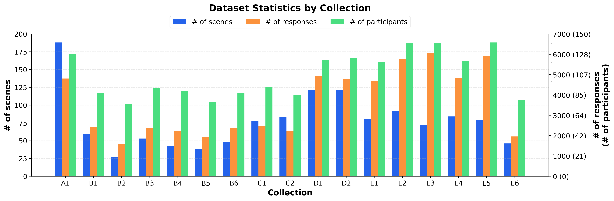
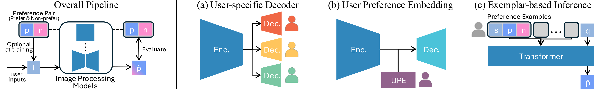
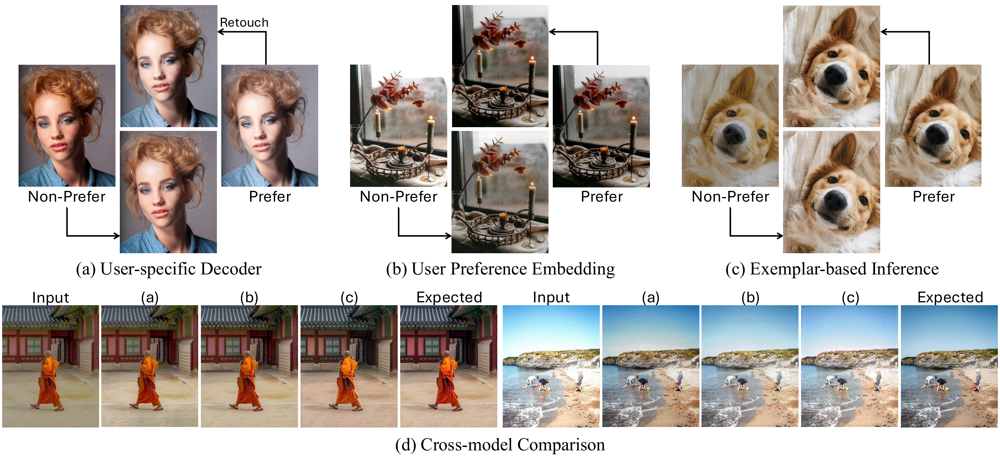

Photographic style preferences are deeply personal, varying across individuals in color and tonal aesthetics. We introduce Personalized Photographic Style (PPS) learning, where the goal is to capture a user's implicit preferences from comparative judgments and apply them consistently across diverse images. To establish a foundation for this problem, we present three contributions. First, we introduce PPSD, a dataset containing pairwise preference judgments from 767 users, each providing an average of 70 comparisons. To capture diverse style signals, images are sourced from professional edits, device pipelines, and generative models. Second, we explore several baseline models demonstrating the feasibility of adapting style transfer and enhancement approaches for preference learning. Third, we develop a comparative evaluation framework suited to the implicit nature of personal preferences.
A large-scale collection of pairwise user preferences for photographic style. 767 users, ~60,000 valid preference judgments, 1,192 unique scenes, and 7,972 unique image style pairs across five source categories.

PPSD is hosted on Google Drive. Includes image pairs and user preference annotations.
We explore three representative approaches for adapting existing models to PPS learning: a User-specific Decoder, a User Preference Embedding, and an Exemplar-based Inference model.


@article{kim2026pps,
title = {Learning Personalized Photographic Style from Pairwise User Preferences},
author = {Kim, Jinwoo and Yoo, Jihye and Kim, Seon Joo},
year = {2026},
}